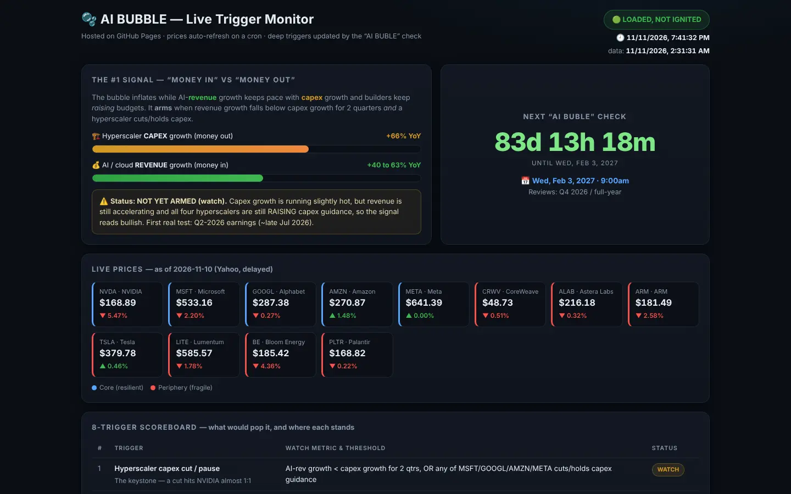

← All projects
Products & AI
AI Bubble monitor
A phone-friendly dashboard that tracks the signals that would pop the AI boom, refreshed by a cron job in the cloud.
The project
A free, always-on monitor for one question: is the AI investment boom still healthy? It compares hyperscaler capex growth with AI revenue growth, tracks a scoreboard of eight triggers, and shows live prices.
GitHub Pages hosts it and GitHub Actions refreshes the data after every US market close, so it works with my laptop off.
What I did
- Serverless by design: a scheduled workflow fetches prices and commits a data file; the page just renders it.
- Trigger scoreboard with clear thresholds for each risk, from capex cuts to credit stress.
- Optional headlines and AI analysis wired in through repository secrets.
Under the hood
JavaScript (Node)the refresh script that pulls prices and headlines.
GitHub Actionsthe weekday cron that keeps the data fresh.
HTML + CSSa single static dashboard that reads one JSON file.